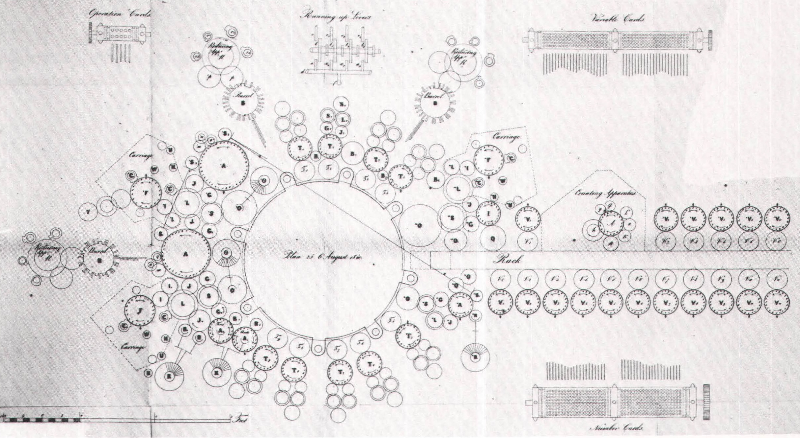
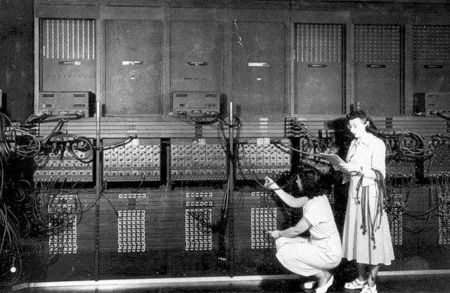

<!DOCTYPE html>
<html>
    <head>
        <meta charset="utf-8">
        <meta name="apple-mobile-web-app-capable" content="yes" />
        <meta name="apple-mobile-web-app-status-bar-style" content="black-translucent" />
        <meta name="viewport" content="width=device-width, initial-scale=1.0, maximum-scale=1.0, user-scalable=no">

        <title>Tire ton langage</title>
        <link rel="stylesheet" href="reveal/css/reveal.min.css">
        <link rel="stylesheet" href="reveal/css/theme/microalg.css" id="theme">

        <!-- If the query includes 'print-pdf', use the PDF print sheet -->
        <script>
            document.write( '<link rel="stylesheet" href="reveal/css/print/' + ( window.location.search.match( /print-pdf/gi ) ? 'pdf' : 'paper' ) + '.css" type="text/css" media="print">' );
        </script>

        <!--[if lt IE 9]>
        <script src="reveal/lib/js/html5shiv.js"></script>
        <![endif]-->

        <script>window.jQuery || document.write('<script src="jquery.min.js"><\/script>')</script>
        <link rel="icon" href="visuels/logo_microalg.ico" />

        <script type="text/x-mathjax-config">
        MathJax.Hub.Config({
            extensions: ["tex2jax.js","fp.js"],
            MathMenu: {
                showLocale: false,
            },
            jax: ["input/TeX","output/HTML-CSS"],
            tex2jax: {
                inlineMath: [['$','$']],
                displayMath: [['$$','$$']],
                }
            });
        </script>
        <script type="text/javascript" src="mathjax/MathJax.js?locale=fr"></script>
    </head>

    <body>
        <div class="reveal">
            <div class="slides">
                <section data-markdown data-separator="^\n----*\n" data-vertical="^\n\n" data-charset="utf-8">

                    <script type="text/template">
&nbsp;

# Tire ton langage de programmation

&nbsp;

&nbsp;

&nbsp;

<div style="text-align: right; font-size: 75%;">31 mars 2016</div>
<div style="text-align: right;">Lycée Carcouët à Nantes</div>

---

# Qu’est-ce ?

* **séquence d’instructions**
    * langage machine, assembleur, C, Java, Python, C#, PHP…
* **données structurées**
    * HTML, XML, CSS…
* la **structure des données du programme** et **leurs relations** entre elles ou avec l’extérieur
    * les langages « orientés objet » (C++, Java, Python, C#…)
    * ou les langages fonctionnels (certains Lisp, Haskell, Caml…)
* des **requêtes** (SQL, Prolog, expressions régulières…)
* …

---

# Les plus connus

<div class="nocenter">


<br>


<br>


---

# Un peu d’histoire

* Mécanique
    * Charles Babbage et Ada Lovelace
    * CB : Architecte de la Machine Analytique
    * AL : La première personne à programmer

---

# Ada Lovelace


---

# La machine analytique


---

# La machine analytique



---

# Un peu d’histoire

* Mécanique
* Électrique/Électronique
    * Câbles
    * Transistors
    * Micro-processeurs

---

# ENIAC



---

# Grace Hopper


---

# Grace Hopper

À partir de 1957, […] elle défend l'idée qu'un
programme **devrait pouvoir être écrit dans un langage proche de l'anglais**
plutôt que d'être calqué sur le langage machine, comme l'assembleur.

<div style="text-align: right; font-size: 75%;">Wikipedia</div>

---

# Compilation / Interprétation

Schéma

---

# Langages ésotériques / exotiques

Grosse liste de langages (pour montrer la diversité)

---

# Intercal

---

# ArnoldC

---

# Shakespeare

---

# BrainF*

(Trouver algo simple)

---

# Piet

---

# Velato

---

# Malbolge

---

# Snowflake

</script>
                </section>
            </div>
        </div>

        <script src="reveal/lib/js/head.min.js"></script>
        <script src="reveal/js/reveal.min.js"></script>

        <script>
            // Full list of configuration options available here:
            // https://github.com/hakimel/reveal.js#configuration
            Reveal.initialize({
                controls: true,
                help: true,
                progress: true,
                slideNumber: true,
                history: true,
                center: false,

                theme: Reveal.getQueryHash().theme, // available themes are in /css/theme
                transition: Reveal.getQueryHash().transition || 'none', // default/cube/page/concave/zoom/linear/fade/none

                // Optional libraries used to extend on reveal.js
                dependencies: [
                    { src: 'reveal/lib/js/classList.js', condition: function() { return !document.body.classList; } },
                    { src: 'reveal/plugin/markdown/marked.js', condition: function() { return !!document.querySelector( '[data-markdown]' ); } },
                    { src: 'reveal/plugin/markdown/markdown.js',
                        condition: function() { return !!document.querySelector( '[data-markdown]' ); },
                        // All list items are fragments, thanks to
                        // http://stackoverflow.com/questions/13705848/fragments-in-reveal-js-using-markdown?rq=1#15354240
                        callback: function() {
                            Array.prototype.forEach.call(document.querySelectorAll('ul > li, ol > li'),
                            function(ele){ if (ele.className != 'nofragment') ele.className = 'fragment';});
                        } },
                    { src: 'reveal/plugin/zoom-js/zoom.js', async: true, condition: function() { return !!document.body.classList; } },
                    { src: 'reveal/plugin/notes/notes.js', async: true, condition: function() { return !!document.body.classList; } },
                    { src: 'plugin/math/math.js', async: true }
                ],
                math: {
                        mathjax: 'mathjax/MathJax.js',
                        config: 'TeX-AMS_HTML-full'},
                minScale: 1,
                maxScale: 1
            });
        </script>
    </body>
</html>
